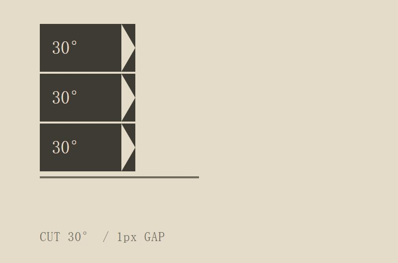
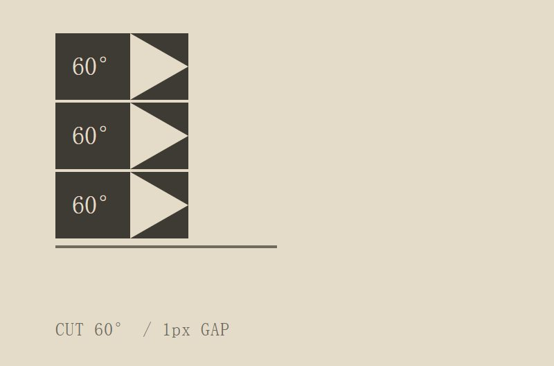
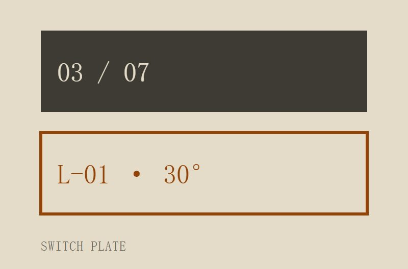
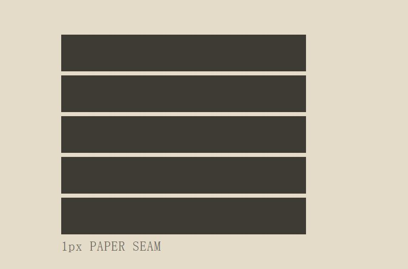
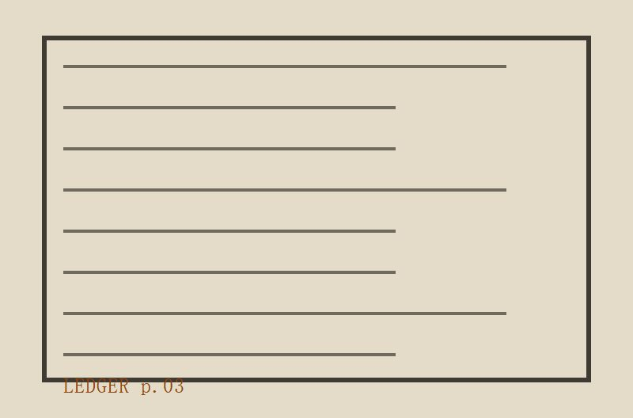

联锁释放簿
值班台 · 锁闭条切口角度表与释放路径扣接记录
- 站号
- 07
- 册次
- 03
- 互斥对数
- 14
- 切口档
- 3
表一 · 锁闭条切口角度登记
01–07
S21-07 / 切口角度 · 锁别号 · 互斥对
| 锁别号 |
道岔号牌 |
切口 |
互斥对 |
| L-01 | 03 / 07 | 30° | 2 |
| L-02 | 07 / 11 | 30° | 2 |
| L-03 | 11 / 14 | 30° | 3 |
| L-04 | 14 / 18 | 30° | 2 |
| L-05 | 18 / 22 | 45° | 4 |
| L-06 | 22 / 26 | 45° | 2 |
| L-07 | 26 / 31 | 60° | 3 |
锁闭条
14 枚
30°01
30°02
30°03
30°04
45°05
45°06
45°07
45°08
60°09
60°10
60°11
60°12
45°13
30°14
表二 · 释放路径扣接缝隙
08–14
S21-07 / 释放路径 · 扣接缝隙 · 所属互斥组
| 释放号 |
扣接缝隙 |
切口 |
互斥组 |
| R-08 | 18 / 26 | 45° | A |
| R-09 | 26 / 31 | 60° | A |
| R-10 | 31 / 35 | 60° | B |
| R-11 | 35 / 40 | 60° | B |
| R-12 | 40 / 44 | 60° | B |
| R-13 | 44 / 49 | 45° | C |
| R-14 | 49 / 53 | 30° | C |

0130° 档
0245° 档

0360° 档

04号牌对照

05扣接缝隙

06簿页翻拍